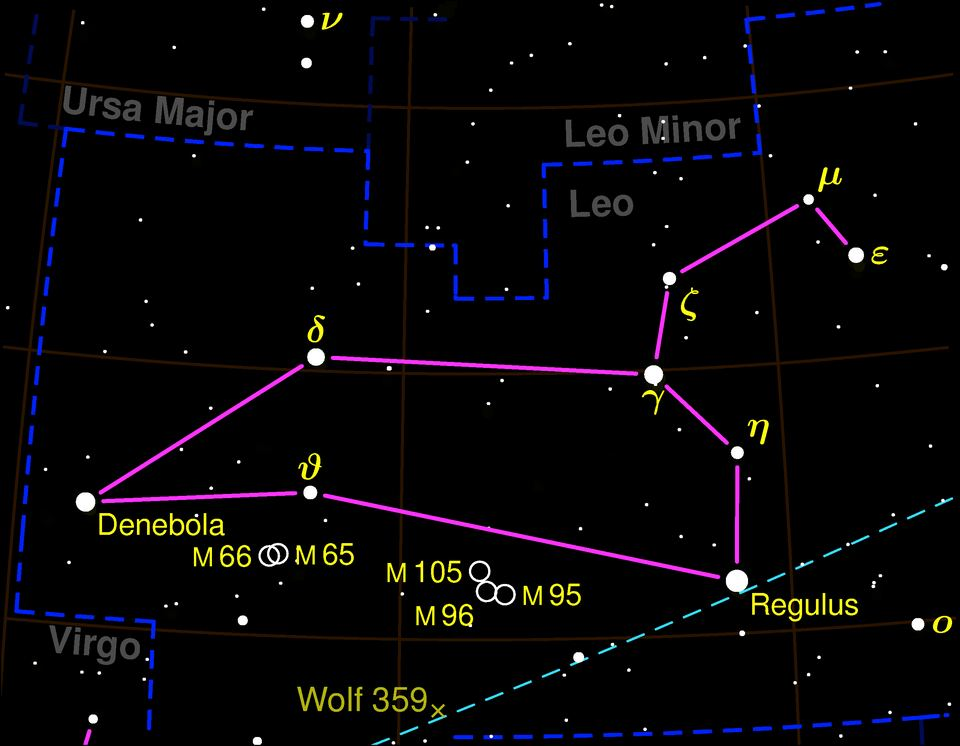

Aslan burcu özellikleri: tarihleri, elementi ve uyumu

Görsel: Leo constellation map negative · User:Bronger · CC BY-SA 3.0 · Wikimedia Commons
Aslan, tropik zodyağın beşinci burcu sayılır ve yazın ortasına denk gelen dönemi kapsar. Bu sayfada burcun tarihleri, gökyüzündeki takımyıldızı ve astrolojide bu burca atfedilen özellikler bir araya getirildi.
Aslan burcu hangi tarihler arası?
Geleneksel tropik zodyakta Aslan burcu 23 Temmuz ile 22 Ağustos arasını kapsar. Geçiş anı yıldan yıla birkaç saat kaydığı için 22-23 Temmuz ve 22-23 Ağustos doğumlularda doğum saatine bakmak gerekir.
Aslan ateş grubundadır ve sabit nitelik taşır. Yöneticisi Güneş, sembolü ise yeleli aslandır. Astrolojide sabit burçlar mevsimin ortasına denk gelir ve süreklilikle ilişkilendirilir.
Ateş grubunun diğer üyeleri Koç ve Yay'dır. Güneş bir gezegen değil, bir yıldızdır; astroloji geleneği onu yine de yönetici gök cismi sayar ve burca atfedilen görünürlük isteğiyle eşleştirir.
Aslan takımyıldızı gökyüzünde nerede?
Aslan takımyıldızı, Latince adıyla Leo, batıda Yengeç ile doğuda Başak arasında yer alır. 947 derecekarelik alanıyla 12. büyük takımyıldızdır. En parlak yıldızı 1,34 kadirlik Regulus'tur; 77,5 ışık yılı uzaklıkta mavi-beyaz bir anakol yıldızıdır ve adı 'küçük kral' anlamına gelir.
Aslanın kuyruğunu işaret eden Denebola ise 2,23 kadir parlaklıkta ve 36 ışık yılı uzaklıktadır. Altı yıldızın çizdiği Orak asterizmi, gökyüzünde ters bir soru işaretine benzer ve hayvanın başını oluşturur.
Mitolojide takımyıldız, Herakles'in çıplak elle öldürdüğü Nemea Aslanı'yla ilişkilendirilir; postunun silah geçirmediği anlatılır. Arkeolojik bulgular Mezopotamya'da MÖ 4000 gibi erken bir tarihte benzer bir takımyıldızın tanındığını gösterir. Kasım ortasındaki Leonid meteor yağmuru da buradan yayılır.
Aslan burcuna atfedilen özellikler neler?
Astrolojide Aslan burcuna özgüven, cömertlik, sahne alma isteği ve sadakat atfedilir. Geleneksel yorumda bu burcun takdir edilmeyi önemsediği ve sorumluluk üstlenmekten kaçınmadığı söylenir.
Zorlanılan yanlar olarak gurur, eleştiriye kapalılık ve ilgi ihtiyacının büyümesi sayılır. Bunlar ölçülmüş özellikler değil, astroloji metinlerinde tekrarlanan yorumlardır.
İş hayatında bu burca yöneticilik, sahne ve temsil gerektiren alanlar ile ekibi motive etme eğilimi atfedilir. İlişkilerde ise açık ilgi gösterme ve karşılık bekleme öne çıkarılır.
Bu aralıkta doğan tanınmış isimler arasında Napolyon Bonapart (15 Ağustos 1769), Coco Chanel (19 Ağustos 1883) ve Barack Obama (4 Ağustos 1961) sayılabilir. Ortak bir kişilik profilleri olduğu iddiası doğrulanabilir değildir.
Aslan burcu hangi burçlarla uyumlu sayılır?
Geleneksel uyum yorumunda Aslan'ın aynı elementten Koç ve Yay ile rahat anlaştığı söylenir. Hava grubundan İkizler ve Terazi de uyumlu kabul edilir.
Zorlu kabul edilen eşleşmeler genelde Boğa ve Akrep'tir; üçü de sabit nitelik taşıdığı için yorumlarda geri adım atmama vurgulanır. Bu tablolar astrolojinin kendi kurallarına dayanır, ilişki sonucunu öngörmez.
Astroloji kişiliği ölçmez ve bilimsel bir sınıflandırma değildir; buradaki özellikler kültürel bir geleneğin yorumlarıdır, merak ve eğlence için okunur.
Takip etmek için
- Yükselen burcunu hesapla
- Burç uyumu tablosuna bak
- Ateş grubu burçlarını karşılaştır
Sık sorulan sorular
Aslan burcu hangi gün başlar?
Geleneksel tarih aralığı 23 Temmuz'da başlar. Geçiş saati yıla göre oynadığı için 22-23 Temmuz doğumlularda Yengeç mi Aslan mı olduğu doğum saatine göre belirlenir.
Güneş neden Aslan'ın yöneticisi sayılır?
Antik astroloji sisteminde Güneş yalnızca Aslan'ı, Ay ise yalnızca Yengeç'i yönetir. Bu eşleştirme yazın en güçlü döneminin bu burca denk gelmesiyle açıklanır; astronomik bir dayanağı yoktur.
Regulus'u gökyüzünde nasıl bulurum?
Orak asterizminin, yani ters soru işareti deseninin en alt ucundaki parlak yıldız Regulus'tur. İlkbahar akşamlarında güney gökyüzünde rahatça seçilir ve 1,34 kadir parlaklıktadır.
Olgular şu yayıncıların haberlerinden derlendi: Wikipedia – Leo (constellation), IAU takımyıldız alan ve sınır listesi, Leonid meteor yağmuru gözlem kayıtları. Metnin tamamı TrendSaphiens tarafından yazıldı; kaynaklarla kelime örtüşmesi %0.0 (eşik %5). Kaynaklarda olmayan bilgi eklenmedi.